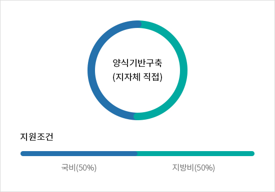
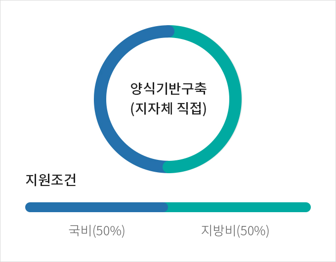
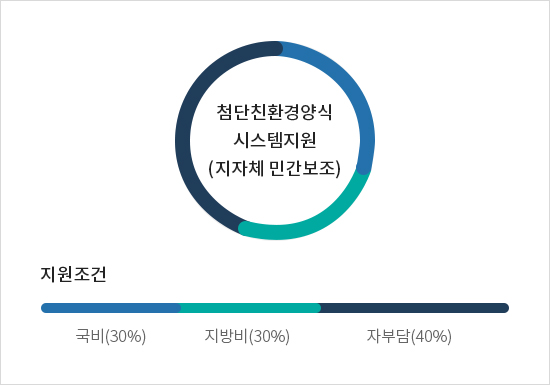
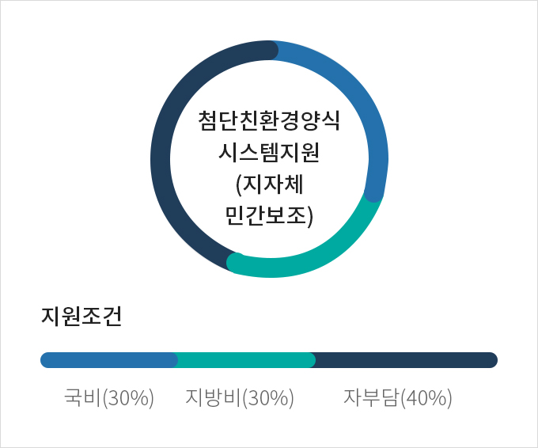

공모사업
- 홈
- 사업소개
- 친환경/스마트양식
- 친환경/스마트 양식기반 조성
- 공모사업
사업목적
- 친환경·고부가가치 양식품종의 생산 증대를 위하여 양식어업의 기반시설을 확충하고, 기술 개발·보급을 촉진하며, 수산종자 및 양식 시설을 첨단·친환경 양식시스템으로 전환
사업개요
| 구분 | 내용 |
|---|---|
| 근거 |
|
| 대상자 |
|
| 자격 및 사업운영 |
|
| 시행지침 | 다운로드 |
지원대상 및 자금의 용도
친환경 또는 스마트시스템 양식방식으로 고부가가치 또는 신양식 품종을 대상으로 양식하는 시설과 이를
활성화할
수 있도록 기반시설 및 개발된 기술을 보급 확대하는
사업으로 지원대상은 공모로 선정
친환경양식
양식 (수산종자 포함) 전 과정을 체계적으로 관리함으로써 수산물이 질병에
노출될 가능성을 최소화하면서도 건강한 수산물을 길러낼 수 있는 환경을
조성하는 생산방식에 의한 시설이어야 함
신양식품종
기술개발 및 보급이 미흡한 양식품종으로 산업적 가치가 있다고 판단되는
품종이어야 함
스마트 양식 시스템
민간양식장 용수처리시설 등에 정보통신기술(ICT)이 결합 또는 산업화 기술
개발·보급이 필요하다고 인정되는 시스템을 도입한 시설이어야 함
기반시설
민간양식장 용수처리시설 등에 정보통신기술(ICT)이 결합 또는 산업화 기술
개발·보급이 필요하다고 인정되는 시스템을 도입한 시설이어야 함
고부가치 품종
공모사업 평가 시 심사위원이 산업적 가치가 높아 고부가가치품종으로 인정
하는 품종이어야 함
기술개발 · 보급
양식어업에 관한 친환경 등 국외 새로운 기술·자재도입, 개발된 기술·자재를
산업화하거나 그 밖에 양식어업에 관한 기술·자재를 개발·보급하기 위하여
필요하다고 인정되는 사업이어야 함
지원형태 사업의무량


양식기반구축(지자체 직접) - 지원조건 (국비 50%, 지방비 50%)


첨단친환경양식 시스템지원(지자체 민간보조) - 지원조건 (국비 30%, 지방비 30%, 자부담 40%)
중요재산 보고 및 공시 대상, 사후관리기간
| 재산명 | 사후관리기간 | 처분제한기준 | |
|---|---|---|---|
| 변동현황 공시 기간 | 처분제한기간 | ||
| 부동산과 그 종물 | 최초공시일로부터 10년 | 취득일로부터 10년 |
|
| 선박, 부표, 부잔교, 부선거와 그 종물 | 최초공시일로부터 10년 | 취득일로부터 10년 | |
| 그 밖의 기계, 장비 등 | 최초공시일로부터 5년 | 취득일로부터 조달청 내용연수 +5년 | |
※ 기타 자세한 사항은 사업시행 지침 참조